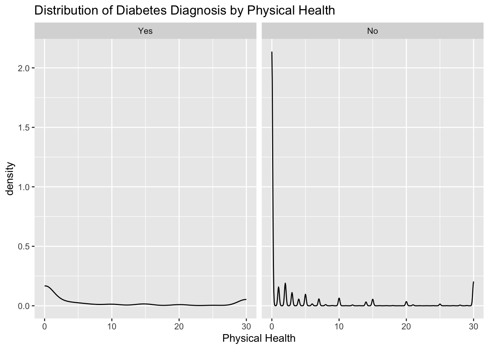
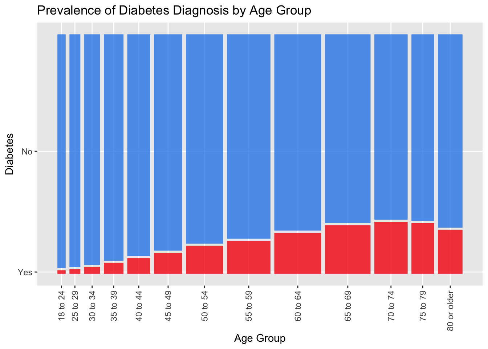

library(conflicted)
library(skimr)
library(psych)
library(tidyverse)
library(janitor)
library(ggmosaic)
library(knitr)
conflicts_prefer(dplyr::lag)
conflicts_prefer(dplyr::filter)
options(scipen = 999, digits = 2)Diabetes EDA
Introduction and overview
This project considers the Diabetes Health Indicators data set. The data is drawn from a 2015 Behavioral Risk Factor Surveillance System (BRFSS) survey conducted by the Centers for Disease Control and Prevention (CDC).
This investigation and analysis considers whether answers to these survey questions might prove useful in predicting a diabetes diagnosis, and, if so, which subset of potential predictors should be considered in modeling.
There are 253,680 obervations in the data set and 21 potential predictors.
Additional information on the data set and survey can be found via the links below:
About the variables
Variables in the data set include:
Diabetes: whether the individual received a diabetes (or prediabetes) diagnosis (“Yes” or “No”) this is the repsonse variable
HighBP: whether or not the individual had ever been diagnosed with high blood pressure (“Yes” or “No”)
HighChol: whether or not the individual had ever been diagnosed with high cholesterol (“Yes” or “No”)
CholCheck: whether or not the individual had cholesterol levels checked within the past five years (“Yes” or “No”)
BMI: body mass index of the individual (numeric value)
Smoker: whether or not the individual had smoked at least 100 cigarettes over entire life (“Yes” or “No”)
Stroke: whether or not the individual had ever had a stroke (“Yes” or “No”)
HeartDiseaseorAttack: whether or not the individual had ever had coronary heart disease or myocardial infarction (“Yes” or “No”)
PhysActivity: whether or not the individual had been physically active in the prior 30 days (“Yes” or “No”)
Fruits: whether or not the individual had consumed fruit one or more times per day in the prior 30 days (“Yes” or “No”)
Veggies: whether or not the individual had consumed vegetables one or more times per day in the prior 30 days (“Yes” or “No”)
HvyAlcoholConsump: whether or not the individual would be considered a heavy drinker based upon reported alcohol consumption behaviors over the prior 30 days (“Yes” or “No”)
AnyHealthcare: whether or not the individual had any form of healthcare coverage (“Yes” or “No”)
NoDocbcCost: whether or not the individual had at any time during the prior 12 months needed to see a doctor but could not because of cost (“Yes” or “No”)
GenHlth: the individual’s self-assessment of his or her general health (from 1 for excellent to 5 for poor)
MentHlth: days of poor mental health over the prior 30 days (numeric value)
PhysHlth: days of physical illness or injury over the prior 30 days (numeric value)
DiffWalk: whether or not the individual faced serious difficulty walking or climbing stairs (“Yes” or “No”)
Sex: indicated sex of respondent (“Female” or “Male”
Age: indicated age group of respondent (“18 to 24”, “25 to 29”, “30 to 34”, “35 to 39”, “40 to 44”, “45 to 49”, “50 to 54”, “55 to 59”, “60 to 64”, “65 to 69”, “70 to 74”, “75 to 79”, “80 or older”)
Education: indicated highest grade or year of school completed (“No school or only kindergarten”, “Elementary”, “Some high school”, “High school graduate”, “Some college or technical school”, “College graduate”)
Income: indicated household income group (“Less than $10,000”, “$10,000 to less than $15,000”, “$15,000 to less than $20,000”, “$20,000 to less than $25,000”, “$25,000 to less than $35,000”, “$35,000 to less than $50,000”, “$50,000 to less than $75,000”, “$75,000 or more”)
Load required packages
Read data
Read in data from the Kaggle source indicated in introduction.
diabetes_raw <- read_csv("data/diabetes_binary_health_indicators_BRFSS2015.csv")Check and manipulate the data
Explore columns names, column types, and values.
glimpse(diabetes_raw)Rows: 253,680
Columns: 22
$ Diabetes_binary <dbl> 0, 0, 0, 0, 0, 0, 0, 0, 1, 0, 1, 0, 0, 1, 0, 0, 0…
$ HighBP <dbl> 1, 0, 1, 1, 1, 1, 1, 1, 1, 0, 0, 1, 0, 1, 0, 1, 1…
$ HighChol <dbl> 1, 0, 1, 0, 1, 1, 0, 1, 1, 0, 0, 1, 0, 1, 1, 0, 1…
$ CholCheck <dbl> 1, 0, 1, 1, 1, 1, 1, 1, 1, 1, 1, 1, 1, 1, 1, 1, 1…
$ BMI <dbl> 40, 25, 28, 27, 24, 25, 30, 25, 30, 24, 25, 34, 2…
$ Smoker <dbl> 1, 1, 0, 0, 0, 1, 1, 1, 1, 0, 1, 1, 1, 0, 1, 0, 0…
$ Stroke <dbl> 0, 0, 0, 0, 0, 0, 0, 0, 0, 0, 0, 0, 0, 0, 1, 0, 0…
$ HeartDiseaseorAttack <dbl> 0, 0, 0, 0, 0, 0, 0, 0, 1, 0, 0, 0, 0, 0, 0, 0, 0…
$ PhysActivity <dbl> 0, 1, 0, 1, 1, 1, 0, 1, 0, 0, 1, 0, 0, 0, 1, 1, 1…
$ Fruits <dbl> 0, 0, 1, 1, 1, 1, 0, 0, 1, 0, 1, 1, 0, 0, 0, 0, 1…
$ Veggies <dbl> 1, 0, 0, 1, 1, 1, 0, 1, 1, 1, 1, 1, 1, 1, 1, 0, 1…
$ HvyAlcoholConsump <dbl> 0, 0, 0, 0, 0, 0, 0, 0, 0, 0, 0, 0, 0, 0, 0, 0, 0…
$ AnyHealthcare <dbl> 1, 0, 1, 1, 1, 1, 1, 1, 1, 1, 1, 1, 1, 1, 1, 1, 1…
$ NoDocbcCost <dbl> 0, 1, 1, 0, 0, 0, 0, 0, 0, 0, 0, 0, 0, 0, 1, 0, 0…
$ GenHlth <dbl> 5, 3, 5, 2, 2, 2, 3, 3, 5, 2, 3, 3, 3, 4, 4, 2, 3…
$ MentHlth <dbl> 18, 0, 30, 0, 3, 0, 0, 0, 30, 0, 0, 0, 0, 0, 30, …
$ PhysHlth <dbl> 15, 0, 30, 0, 0, 2, 14, 0, 30, 0, 0, 30, 15, 0, 2…
$ DiffWalk <dbl> 1, 0, 1, 0, 0, 0, 0, 1, 1, 0, 0, 1, 0, 1, 0, 0, 0…
$ Sex <dbl> 0, 0, 0, 0, 0, 1, 0, 0, 0, 1, 1, 0, 0, 0, 0, 0, 0…
$ Age <dbl> 9, 7, 9, 11, 11, 10, 9, 11, 9, 8, 13, 10, 7, 11, …
$ Education <dbl> 4, 6, 4, 3, 5, 6, 6, 4, 5, 4, 6, 5, 5, 4, 6, 6, 4…
$ Income <dbl> 3, 1, 8, 6, 4, 8, 7, 4, 1, 3, 8, 1, 7, 6, 2, 8, 3…Check for any missing values. None are found.
diabetes_raw |>
skim() |>
focus(n_missing, complete_rate, numeric.hist)| Name | diabetes_raw |
| Number of rows | 253680 |
| Number of columns | 22 |
| _______________________ | |
| Column type frequency: | |
| numeric | 22 |
| ________________________ | |
| Group variables | None |
Variable type: numeric
| skim_variable | n_missing | complete_rate | hist |
|---|---|---|---|
| Diabetes_binary | 0 | 1 | ▇▁▁▁▁ |
| HighBP | 0 | 1 | ▇▁▁▁▆ |
| HighChol | 0 | 1 | ▇▁▁▁▆ |
| CholCheck | 0 | 1 | ▁▁▁▁▇ |
| BMI | 0 | 1 | ▇▅▁▁▁ |
| Smoker | 0 | 1 | ▇▁▁▁▆ |
| Stroke | 0 | 1 | ▇▁▁▁▁ |
| HeartDiseaseorAttack | 0 | 1 | ▇▁▁▁▁ |
| PhysActivity | 0 | 1 | ▂▁▁▁▇ |
| Fruits | 0 | 1 | ▅▁▁▁▇ |
| Veggies | 0 | 1 | ▂▁▁▁▇ |
| HvyAlcoholConsump | 0 | 1 | ▇▁▁▁▁ |
| AnyHealthcare | 0 | 1 | ▁▁▁▁▇ |
| NoDocbcCost | 0 | 1 | ▇▁▁▁▁ |
| GenHlth | 0 | 1 | ▅▇▇▃▁ |
| MentHlth | 0 | 1 | ▇▁▁▁▁ |
| PhysHlth | 0 | 1 | ▇▁▁▁▁ |
| DiffWalk | 0 | 1 | ▇▁▁▁▂ |
| Sex | 0 | 1 | ▇▁▁▁▆ |
| Age | 0 | 1 | ▂▃▇▇▆ |
| Education | 0 | 1 | ▁▁▅▅▇ |
| Income | 0 | 1 | ▁▁▃▂▇ |
Assign a named vector for the numeric variables as described in the introduction: BMI, MentHlth, and PhysHlth. Consistent with social science research practices, treat GenHlth Likert-scale question as interval data (although technically ordinal), and, as such, include among the numeric variables. Assign a named vector for the multilevel factors as described in the introduction: Age, Education, and Income.
true_numeric_cols <- c("BMI", "GenHlth", "MentHlth", "PhysHlth")
multi_fac_cols <- c("Age", "Education", "Income")Rename the Diabetes_binary variable to Diabetes for simplicity. Create factors for binary variables: Sex and all the “Yes”/“No” variables described in the introduction.
diabetes <-
diabetes_raw |>
rename(Diabetes = Diabetes_binary) |>
mutate(Sex = factor(Sex, levels = 0:1, labels = c("Female", "Male"))) |>
mutate(across(
.cols = !c(Sex, all_of(true_numeric_cols), all_of(multi_fac_cols)),
.fns = ~ factor(.x, levels = 0:1, labels = c("No", "Yes"))
)) |>
mutate(across(where(is.factor), fct_rev)) #so modeling correctly reflects positive classCreate ordered factors for multilevel variables: Age, Education, and Income.
diabetes <-
diabetes |>
mutate(Age = factor(Age,
levels = 1:13,
labels = c("18 to 24", "25 to 29", "30 to 34",
"35 to 39", "40 to 44", "45 to 49",
"50 to 54", "55 to 59", "60 to 64",
"65 to 69", "70 to 74", "75 to 79",
"80 or older"),
ordered = T)) |>
mutate(Education = factor(Education,
levels = 1:6,
labels = c("No school or only kindergarten",
"Elementary",
"Some high school",
"High school graduate",
"Some college or technical school",
"College graduate"),
ordered = T)) |>
mutate(Income = factor(Income,
levels = 1:8,
labels = c("Less than $10,000",
"$10,000 to less than $15,000",
"$15,000 to less than $20,000",
"$20,000 to less than $25,000",
"$25,000 to less than $35,000",
"$35,000 to less than $50,000",
"$50,000 to less than $75,000",
"$75,000 or more"),
ordered = T))Confirm changes to variable types.
glimpse(diabetes)Rows: 253,680
Columns: 22
$ Diabetes <fct> No, No, No, No, No, No, No, No, Yes, No, Yes, No,…
$ HighBP <fct> Yes, No, Yes, Yes, Yes, Yes, Yes, Yes, Yes, No, N…
$ HighChol <fct> Yes, No, Yes, No, Yes, Yes, No, Yes, Yes, No, No,…
$ CholCheck <fct> Yes, No, Yes, Yes, Yes, Yes, Yes, Yes, Yes, Yes, …
$ BMI <dbl> 40, 25, 28, 27, 24, 25, 30, 25, 30, 24, 25, 34, 2…
$ Smoker <fct> Yes, Yes, No, No, No, Yes, Yes, Yes, Yes, No, Yes…
$ Stroke <fct> No, No, No, No, No, No, No, No, No, No, No, No, N…
$ HeartDiseaseorAttack <fct> No, No, No, No, No, No, No, No, Yes, No, No, No, …
$ PhysActivity <fct> No, Yes, No, Yes, Yes, Yes, No, Yes, No, No, Yes,…
$ Fruits <fct> No, No, Yes, Yes, Yes, Yes, No, No, Yes, No, Yes,…
$ Veggies <fct> Yes, No, No, Yes, Yes, Yes, No, Yes, Yes, Yes, Ye…
$ HvyAlcoholConsump <fct> No, No, No, No, No, No, No, No, No, No, No, No, N…
$ AnyHealthcare <fct> Yes, No, Yes, Yes, Yes, Yes, Yes, Yes, Yes, Yes, …
$ NoDocbcCost <fct> No, Yes, Yes, No, No, No, No, No, No, No, No, No,…
$ GenHlth <dbl> 5, 3, 5, 2, 2, 2, 3, 3, 5, 2, 3, 3, 3, 4, 4, 2, 3…
$ MentHlth <dbl> 18, 0, 30, 0, 3, 0, 0, 0, 30, 0, 0, 0, 0, 0, 30, …
$ PhysHlth <dbl> 15, 0, 30, 0, 0, 2, 14, 0, 30, 0, 0, 30, 15, 0, 2…
$ DiffWalk <fct> Yes, No, Yes, No, No, No, No, Yes, Yes, No, No, Y…
$ Sex <fct> Female, Female, Female, Female, Female, Male, Fem…
$ Age <ord> 60 to 64, 50 to 54, 60 to 64, 70 to 74, 70 to 74,…
$ Education <ord> High school graduate, College graduate, High scho…
$ Income <ord> "$15,000 to less than $20,000", "Less than $10,00…Generate basic summary statistics for numeric columns.
diabetes |>
select(where(is.numeric)) |>
describe() vars n mean sd median trimmed mad min max range skew kurtosis
BMI 1 253680 28.4 6.6 27 27.7 4.5 12 98 86 2.12 11.00
GenHlth 2 253680 2.5 1.1 2 2.5 1.5 1 5 4 0.42 -0.38
MentHlth 3 253680 3.2 7.4 0 1.0 0.0 0 30 30 2.72 6.44
PhysHlth 4 253680 4.2 8.7 0 1.8 0.0 0 30 30 2.21 3.50
se
BMI 0.01
GenHlth 0.00
MentHlth 0.01
PhysHlth 0.02Check unique values for the categorical variables.
diabetes |>
select(where(is.factor)) |>
summary(maxsum = Inf) Diabetes HighBP HighChol CholCheck Smoker Stroke
Yes: 35346 Yes:108829 Yes:107591 Yes:244210 Yes:112423 Yes: 10292
No :218334 No :144851 No :146089 No : 9470 No :141257 No :243388
HeartDiseaseorAttack PhysActivity Fruits Veggies HvyAlcoholConsump
Yes: 23893 Yes:191920 Yes:160898 Yes:205841 Yes: 14256
No :229787 No : 61760 No : 92782 No : 47839 No :239424
AnyHealthcare NoDocbcCost DiffWalk Sex Age
Yes:241263 Yes: 21354 Yes: 42675 Male :111706 18 to 24 : 5700
No : 12417 No :232326 No :211005 Female:141974 25 to 29 : 7598
30 to 34 :11123
35 to 39 :13823
40 to 44 :16157
45 to 49 :19819
50 to 54 :26314
55 to 59 :30832
60 to 64 :33244
65 to 69 :32194
70 to 74 :23533
75 to 79 :15980
80 or older:17363
Education Income
No school or only kindergarten : 174 Less than $10,000 : 9811
Elementary : 4043 $10,000 to less than $15,000:11783
Some high school : 9478 $15,000 to less than $20,000:15994
High school graduate : 62750 $20,000 to less than $25,000:20135
Some college or technical school: 69910 $25,000 to less than $35,000:25883
College graduate :107325 $35,000 to less than $50,000:36470
$50,000 to less than $75,000:43219
$75,000 or more :90385
Save manipulated data set for use in modeling phase.
saveRDS(diabetes, "data/diabetes.rds")
save(diabetes, file = "data/diabetes.RData")In Exploratory Data Analysis and Modeling, the following variables are excluded from consideration based upon early stage modeling which revealed them to have lower variable importance in many decision tree models: CholCheck, Smoker, Stroke, PhysActivity, Fruits, Veggies, HvyAlcoholConsump, AnyHealthcare, NoDocbcCost, DiffWalk, and Education. To retain the integrity of the full data set, these variables are not removed in the saved data set. Instead, step_rm is used during recipe definition in the Modeling phase to exclude these variables.
EDA
Determine frequency of diabetes diagnoses across the data set.
diabetes |>
ggplot(aes(x = Diabetes)) +
geom_bar(aes(fill = Diabetes)) +
theme(legend.position='none') +
scale_fill_manual(values = c("Yes"="#F51304","No"="#2D8AEB"))Determine the percentage of diabetes diagnoses across the data set.
diabetes |>
tabyl(Diabetes) |>
adorn_totals("row") |>
adorn_pct_formatting() Diabetes n percent
Yes 35346 13.9%
No 218334 86.1%
Total 253680 100.0%The positive class (i.e., “Yes” on Diabetes) appears in less than 14% of cases. This suggests we may wish to consider stratification in the train-test split and cross-validation folds.
Explore the percentage of diabetes diagnoses relative to the sex of the respondent.
diabetes |>
tabyl(Sex, Diabetes) |>
adorn_percentages() |>
adorn_pct_formatting() |>
adorn_title() Diabetes
Sex Yes No
Male 15.2% 84.8%
Female 13.0% 87.0%The relative occurrence of diabetes diagnosis does not appear to differ drastically based on sex.
Explore the percentage of diabetes diagnoses relative to whether or not the respondent had ever been diagnosed with high blood pressure
diabetes |>
tabyl(HighBP, Diabetes) |>
adorn_percentages() |>
adorn_pct_formatting() |>
adorn_title() Diabetes
HighBP Yes No
Yes 24.4% 75.6%
No 6.0% 94.0%diabetes |>
tabyl(HighChol, Diabetes) |>
adorn_percentages() |>
adorn_pct_formatting() |>
adorn_title() Diabetes
HighChol Yes No
Yes 22.0% 78.0%
No 8.0% 92.0%Check how correlated the numeric variables are with one another.
diabetes |>
select(where(is.numeric)) |>
cor() BMI GenHlth MentHlth PhysHlth
BMI 1.000 0.24 0.085 0.12
GenHlth 0.239 1.00 0.302 0.52
MentHlth 0.085 0.30 1.000 0.35
PhysHlth 0.121 0.52 0.354 1.00For most combinations, there appears to be only weak correlation. The highest is GenHlth with PhysHlth, but this is still only a medium-strength correlation. This suggests we would not be particularly concerned with multicollinearity across these numeric variables.
Get summary statistics grouped by diabetes diagnosis.
diabetes |>
group_by(Diabetes) |>
summarise(across(where(is.numeric),
list("median" = median, "mean" = mean, "stdev" = sd),
.names = "{.fn}_{.col}"))|>
mutate(across(where(is.numeric), round, 2)) |>
kable()| Diabetes | median_BMI | mean_BMI | stdev_BMI | median_GenHlth | mean_GenHlth | stdev_GenHlth | median_MentHlth | mean_MentHlth | stdev_MentHlth | median_PhysHlth | mean_PhysHlth | stdev_PhysHlth |
|---|---|---|---|---|---|---|---|---|---|---|---|---|
| Yes | 31 | 32 | 7.4 | 3 | 3.3 | 1 | 0 | 4.5 | 8.9 | 1 | 8.0 | 11.3 |
| No | 27 | 28 | 6.3 | 2 | 2.4 | 1 | 0 | 3.0 | 7.1 | 0 | 3.6 | 8.1 |
diabetes |>
ggplot(aes(Diabetes, BMI)) +
geom_violin(aes(fill = Diabetes)) +
stat_summary(fun = "mean",
geom = "crossbar",
width = 0.5,
size = 0.2,
colour = "white") +
theme(legend.position = "none") +
xlab("Diabetes") +
ylab("BMI") +
ggtitle("Distribution of Diabetes Diagnosis by BMI") +
scale_fill_manual(values = c("Yes"="#F51304","No"="#2D8AEB"))
diabetes |>
ggplot(aes(PhysHlth)) +
geom_density() +
theme(legend.position = "none") +
xlab("Physical Health") +
ggtitle("Distribution of Diabetes Diagnosis by Physical Health") +
facet_wrap(~ Diabetes)diabetes |>
ggplot(aes(MentHlth)) +
geom_density() +
theme(legend.position = "none") +
xlab("Mental Health") +
ggtitle("Distribution of Diabetes Diagnosis by Mental Health") +
facet_wrap(~ Diabetes)
diabetes |>
ggplot(aes(GenHlth)) +
geom_histogram(bins = 5, aes(fill = Diabetes)) +
xlab("General Health") +
ggtitle("Distribution of Diabetes Diagnosis by General Health") +
scale_fill_manual(values = c("Yes"="#F51304","No"="#2D8AEB"))
diabetes |>
ggplot() +
geom_mosaic(aes(x = product(Age), fill = Diabetes)) +
theme(legend.position = "none") +
xlab("Age Group") +
ylab("Diabetes") +
ggtitle("Prevalence of Diabetes Diagnosis by Age Group") +
theme(axis.text.x = element_text(angle=90, vjust=.5, hjust=1)) +
scale_fill_manual(values = c("Yes"="#F51304","No"="#2D8AEB"))
diabetes |>
ggplot() +
geom_mosaic(aes(x = product(Income), fill = Diabetes)) +
theme(legend.position = "none") +
xlab("Income Range") +
ylab("Diabetes") +
ggtitle("Prevalence of Diabetes Diagnosis by Income Range") +
theme(axis.text.x = element_text(angle=90, vjust=.5, hjust=1)) +
scale_fill_manual(values = c("Yes"="#F51304","No"="#2D8AEB"))
Modeling
For Modeling results, go here: Modeling
The story continues…